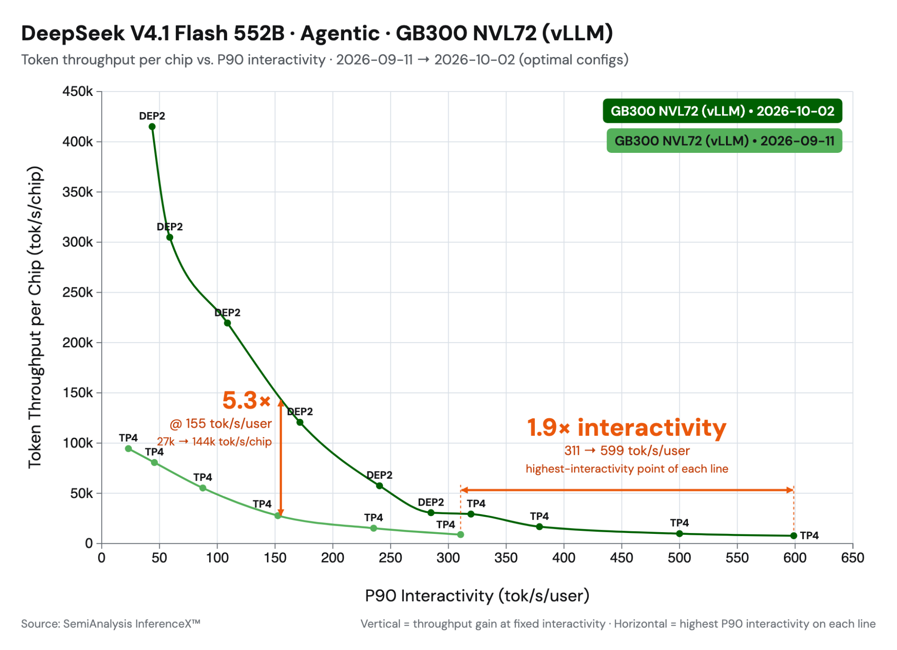
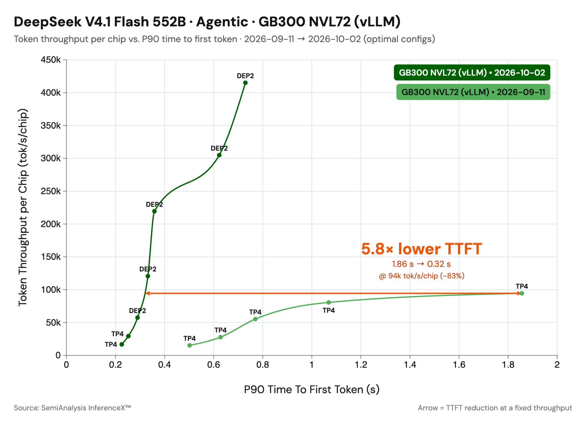

DeepSeek-V4.1-Flash发布才三周，Inferact和vLLM社区已经把AgentX上的agentic吞吐做到了day-0的5倍，低并发延迟也快了1.9倍。
两类优化：SWA bounded replay拿近似换效率，长prompt直接跳过近半个模型；一连串kernel融合与并行把剩下的计算压干。下面按原文结构拆解，保留全部机制与性能数字。
DeepSeek-V4.1-Flash发布后的三周里，Inferact与vLLM社区把它优化了一遍：在SemiAnalysis AgentX agentic serving测试上，低并发延迟加速1.9倍，高吞吐档加速5.3倍。优化分两类：SWA bounded replay，以及kernel相关的融合与并行。
模型本身已经为agentic serving高度优化：causal encoder-decoder（CED）架构，decode每token只激活16B参数，prefill只要8B。KV cache也被压到极致：Compressed Sparse Attention 2（CSA2）、FP4 KV cache、层间KV cache共享三管齐下，全局KV footprint只有每token 890字节。vLLM的工作是把模型侧的这些优化，和引擎侧的系统优化叠起来。
DeepSeek-V4.1-Flash维护两种KV cache。全局KV经过压缩、跨层共享、FP4存储，每token约890字节。滑动窗口（SWA）KV不压缩、FP8存储，覆盖40个层中每一层的最近128个位置。
SWA KV带来两个代价。第一，prefix caching要在每个可能的命中边界都存它，存储量超过全局KV的10倍。第二，prefill要对全部prompt token跑21到39层，尽管decode只读它们的最后128个位置。
直接的想法是不存SWA KV、需要时重算。但精确重算很贵：每层的128 token窗口依赖下一层更早的位置，跨L层重建约等于重跑L × 128个token。DeepSeek V4.1的SWA bounded replay用近似换效率：只重跑最后128个token，并在重放起点处把SWA窗口截断。结果不是bit-exact，但DeepSeek报告质量损失可忽略。vLLM把它用在两个地方，正好对应上面的两个代价。
encoder侧重放只缓存全局KV，跳过SWA KV。prefix命中长度为H时，重跑 [H-128, H) 这段token重建SWA KV，窗口在s = H-128处截断。一次窗口prefill换掉巨额缓存空间。
CED架构里，第20层算出decoder的全局KV，21到39层复用它。vLLM让第20层跑全部token产出全局KV，21到39层只跑每个请求的最后128个token。长prompt下，这等于跳过了近半个模型。
修剪之后，21到39层的GPU工作量太小：eager跑的话，kernel launch开销占主导，GPU空转。而且它们的输入形状与0到20层不同，两部分进不去同一张CUDA graph。vLLM的breakable PIECEWISE graph本来就会在模型中间断开，正好形成天然切分：0到20层按完整batch捕获，21到39层按修剪后的batch单独捕获。修剪后的prefill也能用CUDA graph，而且21到39层可以用自己的捕获尺寸，graph覆盖率更高。
SWA bounded replay对DeepSeek-V4.1默认开启，开关是 --[no-]swa-bounded-replay。
虽然bounded replay不是精确的，DeepSeek报告的质量损失可忽略，vLLM在GSM8K、GPQA等榜单上复测确认：分差在约1.5个标准误以内，无实质精度差异。
性能上，encoder侧用一次窗口prefill换缓存空间，加速主要来自decoder侧。单请求prefill TTFT测了三种配置：replay关；replay开但decoder不用CUDA graphs（21到39层eager跑，只有eager步被修剪）；replay开且decoder用CUDA graphs。
带CUDA graphs的decoder replay把prefill计算时间降低30到40%。CUDA graphs对短prompt最关键：短prompt下launch开销是瓶颈，不用graphs的话，开销吃掉GPU收益，replay反而比baseline慢（DEP2上1K prompt最多慢12%）。长prompt的GPU工作量足够盖住launch开销，eager replay已拿到大部分收益，CUDA graphs再添几个点。
DeepSeek随模型在三个仓库开源了新kernel：DeepSelect（给稀疏attention的top-k库）、DeepGEMM（稀疏indexer kernel与若干GEMM融合kernel）、FlashMLA（NVFP4 KV cache支持与融合attention kernel MegaAttention）。vLLM集成了其中多个，进度在 #57448跟踪。
Mega-mHC（#56962）：把mHC链融成一个kernel：post步、delayed-pre步、RMSNorm。它替换了原来的TileLang融合路径，DeepGEMM的实现更快；在NVIDIA GB200上比TileLang版快1.14到1.51倍。
Mega-Gate（#56266）：把MoE router（gate GEMM、expert打分、bias、top-k选择）融成一个kernel。原来是一个GEMM加一个独立top-k kernel，多一次launch，scores还要在内存里走个来回。融合后中等batch下kernel加速1.18到1.31倍。
mHC多流并行（#57603）：V4.1里mHC系数相对子层错开一位，下一个接缝的系数GEMM只读attention或FFN跑之前就已存在的residual流。双方在下一次post/pre合并前互不需要对方的输出。小batch下，vLLM把下一个mHC block的系数计算放到side CUDA stream上，与attention、FFN并行，藏掉延迟敏感decode关键路径上的工作。TP4低延迟场景下降约4%。
稀疏MQA logits（#56254）：V4.1后面的indexer层从固定的16K候选位置里选top-k。原来的实现算完整上下文的分数，再把非候选block掩掉。DeepGEMM的稀疏kernel只算候选，代价不再随上下文增长。GB300上每层8K token快1.2倍，512K快14到23倍。4×GB300端到端decode提升3到6%，prefill在512K快1.43倍、1M上下文快2倍。
MegaAttention配NVFP4压缩KV（#56935）：FlashMLA的MegaAttention一个launch做完query RoPE、稀疏attention、输出逆RoPE、FP8 cast，直接写进输出投影要读的buffer。attention到下一层之间的独立kernel和内存来回全省掉。它读新的NVFP4压缩KV格式，比之前的FP8 KV cache小45%。激进融合消掉操作间的HBM写，kernel效率再提升1.45倍。
低延迟WO-A融合kernel（#58634）：Blackwell小decode batch，把逆RoPE、FP8量化、WO-A batch GEMM、MXFP8重量化融成一个CuTe-DSL kernel，pre-WO-B链从三个kernel压成一个。思路是中间激活留片上，数据搬运与计算流水起来，消掉小batch下占主导的launch开销和全局内存来回。融合后的WO-A路径最高快约2.1倍，低并发下inter-token延迟降6到7%。
Engram：V4.1的Engram层按哈希token n-gram查两张大FP8表的行。每步只读几行，表放哪、查多快比计算更重要。vLLM异步预取CPU offload的Engram查询，把host内存访问与decoder计算重叠，加速小batch decode（#56512）。Engram head用统一TP/DP分片，同机DP副本共享host表，不多存一份，查询路径上也没有DP通信（#57651）。大表用透明大页（THP）降缺页开销，prefill查询kernel最高快10倍（#56926）。
以SemiAnalysis AgentX为agentic serving代表负载（细节见vLLM前一篇博客）。上面的优化叠起来，相对day-0实现：低延迟结果1.9倍，高吞吐结果约5倍。

低延迟档用TP4配FlashInfer attention。小batch decode主要吃内存带宽，权重分四卡正合适。也试过MegaAttention，但它的优势在高吞吐场景（融合施展空间大）；TP4下收益小得多，实测FlashInfer更快。
高吞吐档切到DEP2，用DP attention、expert分卡。V4.1所有head共享KV latent，TP会在卡间复制KV cache；DP不复制：每卡只存自己服务的请求的KV，session affinity保证跨轮prefix cache局部性。MegaAttention的NVFP4进一步把每请求KV footprint压到FP8的近一半，单卡并发更高。
值得注意的是V4.1内存效率极高，整个测试都不需要KV cache offload。更高并发加P/D分离后，offload才会开始帮忙。
SWA bounded replay加上prefill侧kernel优化，把TTFT也大幅改善。100K吞吐附近，三项优化叠加让TTFT降近70%：bounded replay让模型上半只处理最后128 token，prefill计算近乎减半；CUDA graphs让小而修剪的replay跑在GPU上而不是卡在CPU launch；kernel改进加速模型计算本身。

参考：https://vllm.ai/blog/2026-10-07-deepseek-v41-flash